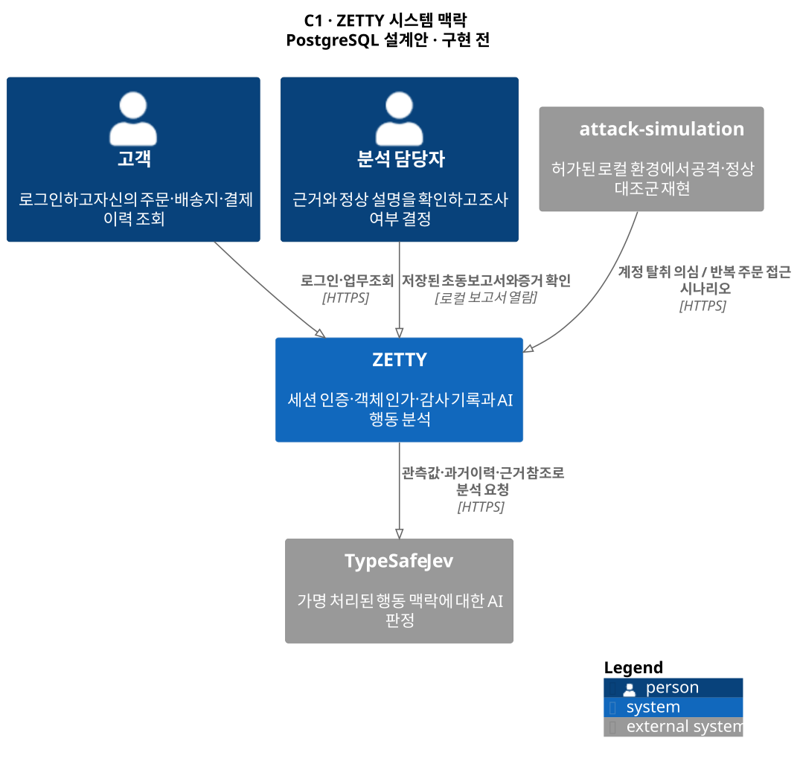

ZETTY · PostgreSQL C1–C4
2026-11-27 · 설계안 · 일반 문서 개편 반영 · 실제 코드·배포 변경 없음
디렉토리·인증·인가·감사·UBA 전체 설계안 읽기 · 전체 원본·이미지 묶음
C1–C3는 C4-PlantUML, C4는 PlantUML 클래스 다이어그램이다. C4의 클래스 이름은 구현 전 제안이다. 이미지를 누르면 SVG를 확대할 수 있다.
C1 · 시스템 맥락
고객·분석 담당자·시나리오 실행 도구·Jev와 ZETTY의 관계. DB는 C2에서 확대한다.
PlantUML 원본 · SVG 확대 · PNG

C2 · 컨테이너
backend 1개와 UBA 1개, 세션 Redis, 파일 로그, PostgreSQL 논리 DB 2개. 로컬 PostgreSQL 서버는 1개다.
PlantUML 원본 · SVG 확대 · PNG

렌더링 재현
PlantUML 1.2025.10의 내장 C4 라이브러리와 Smetana 사용. 외부 렌더링 서비스에 도면을 전송하지 않았다. Java와 한글 폰트가 필요하며 다른 OS에서는 원본의 폰트를 설치된 한글 폰트로 변경한다.
java -Djava.awt.headless=true -jar /path/to/plantuml-1.2025.10.jar -charset UTF-8 -tsvg *.puml
java -Djava.awt.headless=true -jar /path/to/plantuml-1.2025.10.jar -charset UTF-8 -tpng *.puml
JAR SHA-256: 4a01ea09b317180fb8e7eef712dfdca725409d2ee1919e4b5adfe9d8362b6fe5
C4-PlantUML 공식 프로젝트 · C4 Code diagram 정의